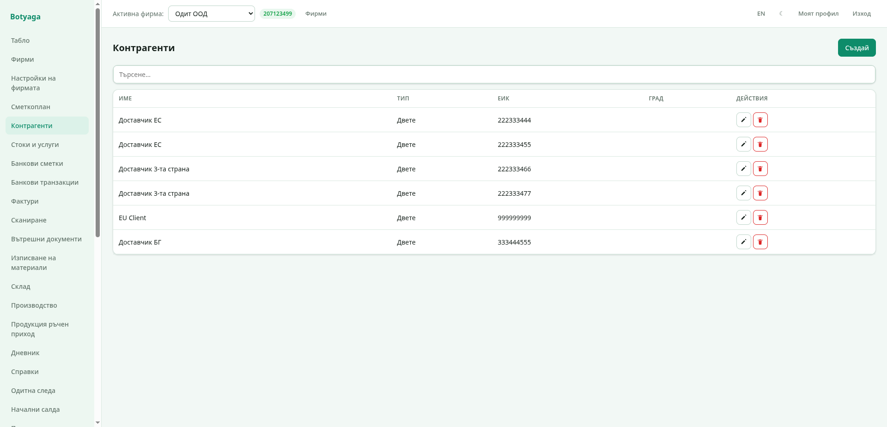
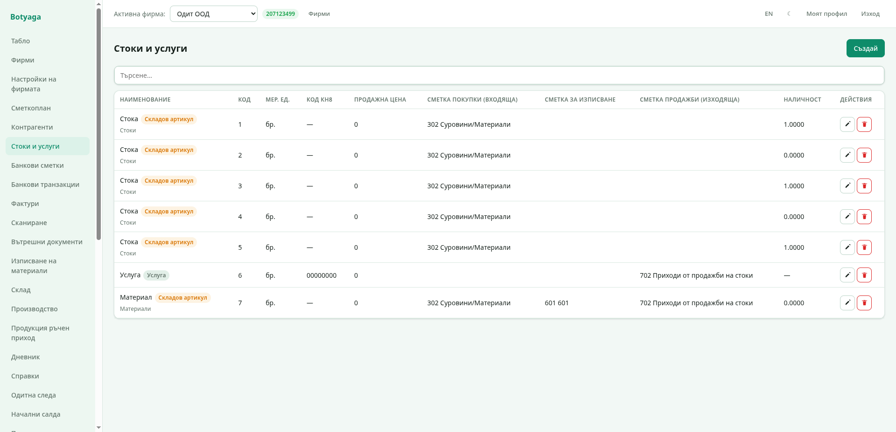

Начало · Контрагенти и стоки
Контрагенти и стоки
Справочници за партньори и артикули.
Контрагенти
Контрагентите имат ЕИК/ДДС номер и адрес. При BG се проверява ЕИК; VIES бутонът попълва данните от НАП за чуждестранен ДДС номер.
Стоки и услуги
За всеки артикул се задава инвентарна сметка (302/303/304), приходна сметка (701/702/…), разходна (611) и себестойност.
Артикулите с auto_write_off = 1 не се показват в ръчното изписване.

